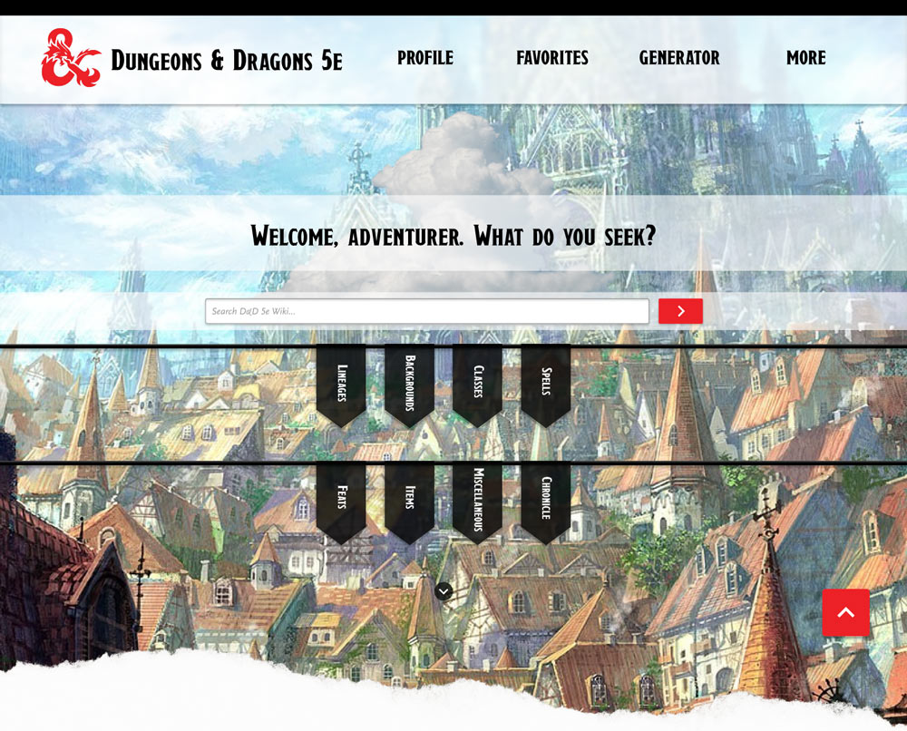

D&D 5e Wikidot
Interactive Website Design

Click here to try the mobile prototype!
Project Description
This project was an interactive redesign for a website of our choosing for IDM 211 and IDM 212 (User Interface Design I and II). Our goal was to critique a website that we believed had certain flaws we could improve upon for greater usability and adherence to interface design principles. Using Figma, we designed, wireframed, and prototyped our reimagined websites.
The website I chose to critique was D&D 5e Wikidot, which is a wiki for Dungeon & Dragons 5th Edition. The main goal of the website is to provide a subscription-free resource for D&D 5e to the general public. This project aimed to restructure the current website to reduce clutter and better suit the themes and visuals of its representative game.
Desktop version